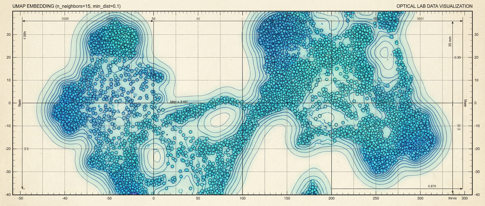
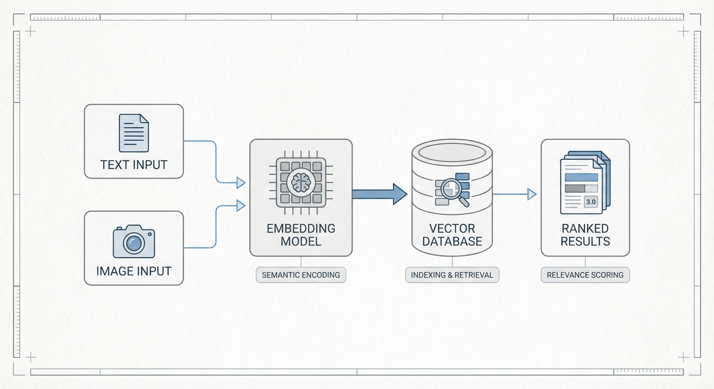

AI-native media search, engineered for depth.
Pixel Detective transforms personal archives into a navigable intelligence layer: semantic search, real-time clustering, and curated latent-space exploration across tens of thousands of images.
Microservices + GPU UMAP
Next.js 15 + Chakra UI
Qdrant Vector DB

How it queries
Pixel Detective turns text and images into embeddings, searches Qdrant for semantic neighbors, and returns ranked results with metadata context.

Credibility, not hype
GPU-accelerated UMAP
10-300x speedups with CUDA and cuML.
Production-grade microservices
Ingestion, ML inference, and vector search decoupled by design.
Interactive latent space
Clustering, lasso selection, and curation workflows live.
Dive deeper
Follow the story: why it exists, how it works, and how the code evolves.

Planning DNA
Each milestone is grounded in PRDs, sprint plans, and architecture references. The system evolves with documented intent, not folklore.
Sprint 09-11 - Microservices refactor, GPU acceleration, latent space curation.
Architecture specs - Frontend and backend blueprints kept current.
Roadmap discipline - Features mapped to measurable performance goals.